Readable summary generated from executed simulation results. Detailed attempt-level data remains in the CSV files beside this report.
Runs: 80 Attempt records: 4,727 Scenarios: 4 Policies: 10
| Scenario | Policy | Seeds | Duplicate processing rate | Duplicate rate after warm-up | Mean latency (s) | P95 latency (s) | Throughput (jobs/s) | Mean recovery (s) | API operations / job | Pareto-optimal |
|---|---|---|---|---|---|---|---|---|---|---|
| mixed_no_failure | adaptive_heartbeat | 2 | 0.000 | 0.000 | 4.674 | 16.418 | 0.910 | — | 3.80 | False |
| mixed_no_failure | adaptive_heartbeat_fixed_budget | 2 | 0.000 | 0.000 | 4.674 | 16.418 | 0.910 | — | 3.80 | False |
| mixed_no_failure | adaptive_p90 | 2 | 0.074 | 0.059 | 6.278 | 17.316 | 0.778 | — | 3.08 | False |
| mixed_no_failure | adaptive_p90_relative | 2 | 0.074 | 0.059 | 6.278 | 17.316 | 0.778 | — | 3.08 | False |
| mixed_no_failure | fixed_heartbeat | 2 | 0.010 | 0.012 | 4.674 | 16.418 | 0.766 | — | 3.78 | False |
| mixed_no_failure | fixed_long | 2 | 0.000 | 0.000 | 4.674 | 16.418 | 0.910 | — | 3.00 | False |
| mixed_no_failure | fixed_overall_mean | 2 | 0.286 | 0.285 | 17.416 | 32.233 | 0.560 | — | 3.40 | False |
| mixed_no_failure | fixed_per_class | 2 | 0.000 | 0.000 | 4.674 | 16.418 | 0.910 | — | 3.00 | False |
| mixed_no_failure | fixed_short | 2 | 0.378 | 0.365 | 28.203 | 52.059 | 0.461 | — | 3.62 | False |
| mixed_no_failure | pretuned_per_class | 2 | 0.037 | 0.035 | 5.968 | 17.803 | 0.764 | — | 3.04 | False |
| mixed_with_failures | adaptive_heartbeat | 2 | 0.000 | 0.000 | 4.824 | 16.418 | 0.910 | 3.536 | 3.83 | True |
| mixed_with_failures | adaptive_heartbeat_fixed_budget | 2 | 0.000 | 0.000 | 4.824 | 16.418 | 0.910 | 3.536 | 3.83 | True |
| mixed_with_failures | adaptive_p90 | 2 | 0.064 | 0.047 | 6.263 | 16.994 | 0.790 | 10.953 | 3.10 | False |
| mixed_with_failures | adaptive_p90_relative | 2 | 0.064 | 0.047 | 6.263 | 16.994 | 0.790 | 10.953 | 3.10 | False |
| mixed_with_failures | fixed_heartbeat | 2 | 0.010 | 0.012 | 4.824 | 16.418 | 0.766 | 3.536 | 3.81 | False |
| mixed_with_failures | fixed_long | 2 | 0.000 | 0.000 | 5.583 | 20.950 | 0.910 | 28.693 | 3.03 | False |
| mixed_with_failures | fixed_overall_mean | 2 | 0.309 | 0.308 | 18.914 | 32.645 | 0.546 | 4.555 | 3.49 | False |
| mixed_with_failures | fixed_per_class | 2 | 0.000 | 0.000 | 4.962 | 16.418 | 0.910 | 7.289 | 3.03 | False |
| mixed_with_failures | fixed_short | 2 | 0.393 | 0.382 | 28.693 | 47.596 | 0.463 | 4.940 | 3.68 | False |
| mixed_with_failures | pretuned_per_class | 2 | 0.037 | 0.035 | 5.821 | 17.316 | 0.770 | 7.171 | 3.07 | False |
| mixed_with_hangs | adaptive_heartbeat | 2 | 0.000 | 0.000 | 12.062 | 28.077 | 0.763 | 13.550 | 4.51 | False |
| mixed_with_hangs | adaptive_heartbeat_fixed_budget | 2 | 0.000 | 0.000 | 23.650 | 59.442 | 0.428 | 37.937 | 6.05 | False |
| mixed_with_hangs | adaptive_p90 | 2 | 0.065 | 0.051 | 9.985 | 21.202 | 0.745 | 4.809 | 3.24 | False |
| mixed_with_hangs | adaptive_p90_relative | 2 | 0.086 | 0.079 | 9.863 | 21.135 | 0.733 | 3.640 | 3.27 | True |
| mixed_with_hangs | fixed_heartbeat | 2 | 0.017 | 0.021 | 14.044 | 30.523 | 0.611 | 16.950 | 4.59 | False |
| mixed_with_hangs | fixed_long | 2 | 0.000 | 0.000 | 18.942 | 44.452 | 0.512 | 27.937 | 3.16 | False |
| mixed_with_hangs | fixed_overall_mean | 2 | 0.225 | 0.214 | 26.751 | 50.094 | 0.472 | 3.545 | 3.53 | True |
| mixed_with_hangs | fixed_per_class | 2 | 0.000 | 0.000 | 7.177 | 18.383 | 0.850 | 4.879 | 3.16 | True |
| mixed_with_hangs | fixed_short | 2 | 0.267 | 0.225 | 41.891 | 86.460 | 0.351 | 3.271 | 3.58 | True |
| mixed_with_hangs | pretuned_per_class | 2 | 0.033 | 0.031 | 8.461 | 20.499 | 0.739 | 4.232 | 3.20 | True |
| sudden_shift | adaptive_heartbeat | 2 | 0.038 | 0.048 | 11.852 | 29.333 | 0.576 | — | 4.55 | False |
| sudden_shift | adaptive_heartbeat_fixed_budget | 2 | 0.000 | 0.000 | 11.331 | 26.376 | 0.668 | — | 4.63 | False |
| sudden_shift | adaptive_p90 | 2 | 0.098 | 0.120 | 13.495 | 33.290 | 0.531 | — | 3.11 | False |
| sudden_shift | adaptive_p90_relative | 2 | 0.098 | 0.120 | 13.678 | 34.060 | 0.521 | — | 3.11 | False |
| sudden_shift | fixed_heartbeat | 2 | 0.010 | 0.012 | 11.331 | 26.376 | 0.609 | — | 4.62 | False |
| sudden_shift | fixed_long | 2 | 0.000 | 0.000 | 11.331 | 26.376 | 0.668 | — | 3.00 | False |
| sudden_shift | fixed_overall_mean | 2 | 0.210 | 0.241 | 15.351 | 41.325 | 0.469 | — | 3.27 | False |
| sudden_shift | fixed_per_class | 2 | 0.048 | 0.059 | 11.681 | 28.118 | 0.552 | — | 3.05 | False |
| sudden_shift | fixed_short | 2 | 0.541 | 0.568 | 35.761 | 96.014 | 0.303 | — | 4.18 | False |
| sudden_shift | pretuned_per_class | 2 | 0.142 | 0.171 | 13.817 | 36.011 | 0.513 | — | 3.17 | False |
Mean difference = reference − comparator over seeds (negative = reference lower). Wilcoxon signed-rank p-values; p_holm is Holm-adjusted across every test in paired_comparisons.csv.
| scenario | reference | comparator | metric | n_pairs | mean_difference | ci_low | ci_high | p_value | p_holm |
|---|---|---|---|---|---|---|---|---|---|
| mixed_no_failure | adaptive_p90 | adaptive_heartbeat | duplicate_processing_rate | 2 | 0.0741 | 0.0741 | 0.0741 | 0.3458 | 1.0 |
| mixed_no_failure | adaptive_p90 | adaptive_heartbeat | mean_failure_recovery_time_s | 0 | — | — | — | — | — |
| mixed_no_failure | adaptive_p90 | adaptive_heartbeat | steady_duplicate_processing_rate | 2 | 0.0587 | -0.0820 | 0.1994 | 0.5000 | 1.0 |
| mixed_no_failure | adaptive_p90 | adaptive_heartbeat_fixed_budget | duplicate_processing_rate | 2 | 0.0741 | 0.0741 | 0.0741 | 0.3458 | 1.0 |
| mixed_no_failure | adaptive_p90 | adaptive_heartbeat_fixed_budget | mean_failure_recovery_time_s | 0 | — | — | — | — | — |
| mixed_no_failure | adaptive_p90 | adaptive_heartbeat_fixed_budget | steady_duplicate_processing_rate | 2 | 0.0587 | -0.0820 | 0.1994 | 0.5000 | 1.0 |
| mixed_no_failure | adaptive_p90 | adaptive_p90_relative | duplicate_processing_rate | 2 | 0.0000 | 0.0000 | 0.0000 | — | — |
| mixed_no_failure | adaptive_p90 | adaptive_p90_relative | mean_failure_recovery_time_s | 0 | — | — | — | — | — |
| mixed_no_failure | adaptive_p90 | adaptive_p90_relative | steady_duplicate_processing_rate | 2 | 0.0000 | 0.0000 | 0.0000 | — | — |
| mixed_no_failure | adaptive_p90 | fixed_heartbeat | duplicate_processing_rate | 2 | 0.0643 | -0.0603 | 0.1888 | 0.5000 | 1.0 |
| mixed_no_failure | adaptive_p90 | fixed_heartbeat | mean_failure_recovery_time_s | 0 | — | — | — | — | — |
| mixed_no_failure | adaptive_p90 | fixed_heartbeat | steady_duplicate_processing_rate | 2 | 0.0465 | 0.0323 | 0.0607 | 0.5000 | 1.0 |
| mixed_no_failure | adaptive_p90 | fixed_long | duplicate_processing_rate | 2 | 0.0741 | 0.0741 | 0.0741 | 0.3458 | 1.0 |
| mixed_no_failure | adaptive_p90 | fixed_long | mean_failure_recovery_time_s | 0 | — | — | — | — | — |
| mixed_no_failure | adaptive_p90 | fixed_long | steady_duplicate_processing_rate | 2 | 0.0587 | -0.0820 | 0.1994 | 0.5000 | 1.0 |
| mixed_no_failure | adaptive_p90 | fixed_overall_mean | duplicate_processing_rate | 2 | -0.2115 | -0.3412 | -0.0818 | 0.5000 | 1.0 |
| mixed_no_failure | adaptive_p90 | fixed_overall_mean | mean_failure_recovery_time_s | 0 | — | — | — | — | — |
| mixed_no_failure | adaptive_p90 | fixed_overall_mean | steady_duplicate_processing_rate | 2 | -0.2261 | -0.4099 | -0.0423 | 0.5000 | 1.0 |
| mixed_no_failure | adaptive_p90 | fixed_per_class | duplicate_processing_rate | 2 | 0.0741 | 0.0741 | 0.0741 | 0.3458 | 1.0 |
| mixed_no_failure | adaptive_p90 | fixed_per_class | mean_failure_recovery_time_s | 0 | — | — | — | — | — |
| mixed_no_failure | adaptive_p90 | fixed_per_class | steady_duplicate_processing_rate | 2 | 0.0587 | -0.0820 | 0.1994 | 0.5000 | 1.0 |
| mixed_no_failure | adaptive_p90 | fixed_short | duplicate_processing_rate | 2 | -0.3040 | -0.9869 | 0.3789 | 0.5000 | 1.0 |
| mixed_no_failure | adaptive_p90 | fixed_short | mean_failure_recovery_time_s | 0 | — | — | — | — | — |
| mixed_no_failure | adaptive_p90 | fixed_short | steady_duplicate_processing_rate | 2 | -0.3064 | -1.1741 | 0.5613 | 0.5000 | 1.0 |
| mixed_no_failure | adaptive_p90 | pretuned_per_class | duplicate_processing_rate | 2 | 0.0370 | -0.4336 | 0.5076 | 1.0000 | 1.0 |
| mixed_no_failure | adaptive_p90 | pretuned_per_class | mean_failure_recovery_time_s | 0 | — | — | — | — | — |
| mixed_no_failure | adaptive_p90 | pretuned_per_class | steady_duplicate_processing_rate | 2 | 0.0238 | -0.2787 | 0.3263 | 1.0000 | 1.0 |
| mixed_with_failures | adaptive_p90 | adaptive_heartbeat | duplicate_processing_rate | 2 | 0.0638 | -0.0664 | 0.1941 | 0.5000 | 1.0 |
| mixed_with_failures | adaptive_p90 | adaptive_heartbeat | mean_failure_recovery_time_s | 1 | 7.4167 | — | — | 1.0000 | 1.0 |
| mixed_with_failures | adaptive_p90 | adaptive_heartbeat | steady_duplicate_processing_rate | 2 | 0.0471 | -0.2412 | 0.3354 | 0.5000 | 1.0 |
| mixed_with_failures | adaptive_p90 | adaptive_heartbeat_fixed_budget | duplicate_processing_rate | 2 | 0.0638 | -0.0664 | 0.1941 | 0.5000 | 1.0 |
| mixed_with_failures | adaptive_p90 | adaptive_heartbeat_fixed_budget | mean_failure_recovery_time_s | 1 | 7.4167 | — | — | 1.0000 | 1.0 |
| mixed_with_failures | adaptive_p90 | adaptive_heartbeat_fixed_budget | steady_duplicate_processing_rate | 2 | 0.0471 | -0.2412 | 0.3354 | 0.5000 | 1.0 |
| mixed_with_failures | adaptive_p90 | adaptive_p90_relative | duplicate_processing_rate | 2 | 0.0000 | 0.0000 | 0.0000 | — | — |
| mixed_with_failures | adaptive_p90 | adaptive_p90_relative | mean_failure_recovery_time_s | 1 | 0.0000 | — | — | — | — |
| mixed_with_failures | adaptive_p90 | adaptive_p90_relative | steady_duplicate_processing_rate | 2 | 0.0000 | 0.0000 | 0.0000 | — | — |
| mixed_with_failures | adaptive_p90 | fixed_heartbeat | duplicate_processing_rate | 2 | 0.0540 | 0.0483 | 0.0597 | 0.5000 | 1.0 |
| mixed_with_failures | adaptive_p90 | fixed_heartbeat | mean_failure_recovery_time_s | 1 | 7.4167 | — | — | 1.0000 | 1.0 |
| mixed_with_failures | adaptive_p90 | fixed_heartbeat | steady_duplicate_processing_rate | 2 | 0.0349 | -0.0984 | 0.1682 | 0.5000 | 1.0 |
| mixed_with_failures | adaptive_p90 | fixed_long | duplicate_processing_rate | 2 | 0.0638 | -0.0664 | 0.1941 | 0.5000 | 1.0 |
| mixed_with_failures | adaptive_p90 | fixed_long | mean_failure_recovery_time_s | 1 | -17.7404 | — | — | 1.0000 | 1.0 |
| mixed_with_failures | adaptive_p90 | fixed_long | steady_duplicate_processing_rate | 2 | 0.0471 | -0.2412 | 0.3354 | 0.5000 | 1.0 |
| mixed_with_failures | adaptive_p90 | fixed_overall_mean | duplicate_processing_rate | 2 | -0.2450 | -0.3116 | -0.1784 | 0.5000 | 1.0 |
| mixed_with_failures | adaptive_p90 | fixed_overall_mean | mean_failure_recovery_time_s | 1 | 2.8339 | — | — | 1.0000 | 1.0 |
| mixed_with_failures | adaptive_p90 | fixed_overall_mean | steady_duplicate_processing_rate | 2 | -0.2614 | -0.4276 | -0.0952 | 0.5000 | 1.0 |
| mixed_with_failures | adaptive_p90 | fixed_per_class | duplicate_processing_rate | 2 | 0.0638 | -0.0664 | 0.1941 | 0.5000 | 1.0 |
| mixed_with_failures | adaptive_p90 | fixed_per_class | mean_failure_recovery_time_s | 1 | 3.6635 | — | — | 1.0000 | 1.0 |
| mixed_with_failures | adaptive_p90 | fixed_per_class | steady_duplicate_processing_rate | 2 | 0.0471 | -0.2412 | 0.3354 | 0.5000 | 1.0 |
| mixed_with_failures | adaptive_p90 | fixed_short | duplicate_processing_rate | 2 | -0.3288 | -0.4417 | -0.2159 | 0.5000 | 1.0 |
| mixed_with_failures | adaptive_p90 | fixed_short | mean_failure_recovery_time_s | 1 | 2.4095 | — | — | 1.0000 | 1.0 |
| mixed_with_failures | adaptive_p90 | fixed_short | steady_duplicate_processing_rate | 2 | -0.3352 | -0.5299 | -0.1405 | 0.5000 | 1.0 |
| mixed_with_failures | adaptive_p90 | pretuned_per_class | duplicate_processing_rate | 2 | 0.0268 | -0.3136 | 0.3671 | 1.0000 | 1.0 |
| mixed_with_failures | adaptive_p90 | pretuned_per_class | mean_failure_recovery_time_s | 1 | 3.7813 | — | — | 1.0000 | 1.0 |
| mixed_with_failures | adaptive_p90 | pretuned_per_class | steady_duplicate_processing_rate | 2 | 0.0122 | -0.1428 | 0.1671 | 1.0000 | 1.0 |
| mixed_with_hangs | adaptive_p90 | adaptive_heartbeat | duplicate_processing_rate | 2 | 0.0646 | 0.0381 | 0.0911 | 0.5000 | 1.0 |
| mixed_with_hangs | adaptive_p90 | adaptive_heartbeat | mean_failure_recovery_time_s | 2 | -8.7417 | -71.8851 | 54.4016 | 0.5000 | 1.0 |
| mixed_with_hangs | adaptive_p90 | adaptive_heartbeat | steady_duplicate_processing_rate | 2 | 0.0509 | -0.0971 | 0.1988 | 0.5000 | 1.0 |
| mixed_with_hangs | adaptive_p90 | adaptive_heartbeat_fixed_budget | duplicate_processing_rate | 2 | 0.0646 | 0.0381 | 0.0911 | 0.5000 | 1.0 |
| mixed_with_hangs | adaptive_p90 | adaptive_heartbeat_fixed_budget | mean_failure_recovery_time_s | 2 | -33.1286 | -53.6610 | -12.5963 | 0.5000 | 1.0 |
| mixed_with_hangs | adaptive_p90 | adaptive_heartbeat_fixed_budget | steady_duplicate_processing_rate | 2 | 0.0509 | -0.0971 | 0.1988 | 0.5000 | 1.0 |
| mixed_with_hangs | adaptive_p90 | adaptive_p90_relative | duplicate_processing_rate | 2 | -0.0219 | -0.1051 | 0.0614 | 0.5000 | 1.0 |
| mixed_with_hangs | adaptive_p90 | adaptive_p90_relative | mean_failure_recovery_time_s | 2 | 1.1688 | -0.0157 | 2.3533 | 0.5000 | 1.0 |
| mixed_with_hangs | adaptive_p90 | adaptive_p90_relative | steady_duplicate_processing_rate | 2 | -0.0277 | -0.1365 | 0.0811 | 0.5000 | 1.0 |
| mixed_with_hangs | adaptive_p90 | fixed_heartbeat | duplicate_processing_rate | 2 | 0.0473 | -0.1453 | 0.2399 | 0.5000 | 1.0 |
| mixed_with_hangs | adaptive_p90 | fixed_heartbeat | mean_failure_recovery_time_s | 2 | -12.1417 | -32.5077 | 8.2242 | 0.5000 | 1.0 |
| mixed_with_hangs | adaptive_p90 | fixed_heartbeat | steady_duplicate_processing_rate | 2 | 0.0296 | -0.0928 | 0.1520 | 0.5000 | 1.0 |
| mixed_with_hangs | adaptive_p90 | fixed_long | duplicate_processing_rate | 2 | 0.0646 | 0.0381 | 0.0911 | 0.5000 | 1.0 |
| mixed_with_hangs | adaptive_p90 | fixed_long | mean_failure_recovery_time_s | 2 | -23.1286 | -43.6610 | -2.5963 | 0.5000 | 1.0 |
| mixed_with_hangs | adaptive_p90 | fixed_long | steady_duplicate_processing_rate | 2 | 0.0509 | -0.0971 | 0.1988 | 0.5000 | 1.0 |
| mixed_with_hangs | adaptive_p90 | fixed_overall_mean | duplicate_processing_rate | 2 | -0.1601 | -0.1831 | -0.1371 | 0.5000 | 1.0 |
| mixed_with_hangs | adaptive_p90 | fixed_overall_mean | mean_failure_recovery_time_s | 2 | 1.2632 | -10.3552 | 12.8816 | 0.5000 | 1.0 |
| mixed_with_hangs | adaptive_p90 | fixed_overall_mean | steady_duplicate_processing_rate | 2 | -0.1636 | -0.4114 | 0.0841 | 0.5000 | 1.0 |
| mixed_with_hangs | adaptive_p90 | fixed_per_class | duplicate_processing_rate | 2 | 0.0646 | 0.0381 | 0.0911 | 0.5000 | 1.0 |
| mixed_with_hangs | adaptive_p90 | fixed_per_class | mean_failure_recovery_time_s | 2 | -0.0703 | -10.4263 | 10.2858 | 1.0000 | 1.0 |
| mixed_with_hangs | adaptive_p90 | fixed_per_class | steady_duplicate_processing_rate | 2 | 0.0509 | -0.0971 | 0.1988 | 0.5000 | 1.0 |
| mixed_with_hangs | adaptive_p90 | fixed_short | duplicate_processing_rate | 2 | -0.2025 | -0.5601 | 0.1551 | 0.5000 | 1.0 |
| mixed_with_hangs | adaptive_p90 | fixed_short | mean_failure_recovery_time_s | 2 | 1.5377 | -0.9139 | 3.9893 | 0.5000 | 1.0 |
| mixed_with_hangs | adaptive_p90 | fixed_short | steady_duplicate_processing_rate | 2 | -0.1742 | -0.7328 | 0.3844 | 0.5000 | 1.0 |
| mixed_with_hangs | adaptive_p90 | pretuned_per_class | duplicate_processing_rate | 2 | 0.0312 | -0.3658 | 0.4283 | 1.0000 | 1.0 |
| mixed_with_hangs | adaptive_p90 | pretuned_per_class | mean_failure_recovery_time_s | 2 | 0.5761 | -16.9281 | 18.0804 | 1.0000 | 1.0 |
| mixed_with_hangs | adaptive_p90 | pretuned_per_class | steady_duplicate_processing_rate | 2 | 0.0196 | -0.2295 | 0.2687 | 1.0000 | 1.0 |
| sudden_shift | adaptive_p90 | adaptive_heartbeat | duplicate_processing_rate | 2 | 0.0600 | -0.2496 | 0.3696 | 0.5000 | 1.0 |
| sudden_shift | adaptive_p90 | adaptive_heartbeat | mean_failure_recovery_time_s | 0 | — | — | — | — | — |
| sudden_shift | adaptive_p90 | adaptive_heartbeat | steady_duplicate_processing_rate | 2 | 0.0723 | -0.2963 | 0.4410 | 0.5000 | 1.0 |
| sudden_shift | adaptive_p90 | adaptive_heartbeat_fixed_budget | duplicate_processing_rate | 2 | 0.0984 | -0.2112 | 0.4080 | 0.5000 | 1.0 |
| sudden_shift | adaptive_p90 | adaptive_heartbeat_fixed_budget | mean_failure_recovery_time_s | 0 | — | — | — | — | — |
| sudden_shift | adaptive_p90 | adaptive_heartbeat_fixed_budget | steady_duplicate_processing_rate | 2 | 0.1199 | -0.2487 | 0.4886 | 0.5000 | 1.0 |
| sudden_shift | adaptive_p90 | adaptive_p90_relative | duplicate_processing_rate | 2 | 0.0000 | 0.0000 | 0.0000 | — | — |
| sudden_shift | adaptive_p90 | adaptive_p90_relative | mean_failure_recovery_time_s | 0 | — | — | — | — | — |
| sudden_shift | adaptive_p90 | adaptive_p90_relative | steady_duplicate_processing_rate | 2 | 0.0000 | 0.0000 | 0.0000 | — | — |
| sudden_shift | adaptive_p90 | fixed_heartbeat | duplicate_processing_rate | 2 | 0.0886 | -0.0964 | 0.2737 | 0.5000 | 1.0 |
| sudden_shift | adaptive_p90 | fixed_heartbeat | mean_failure_recovery_time_s | 0 | — | — | — | — | — |
| sudden_shift | adaptive_p90 | fixed_heartbeat | steady_duplicate_processing_rate | 2 | 0.1077 | -0.1060 | 0.3214 | 0.5000 | 1.0 |
| sudden_shift | adaptive_p90 | fixed_long | duplicate_processing_rate | 2 | 0.0984 | -0.2112 | 0.4080 | 0.5000 | 1.0 |
| sudden_shift | adaptive_p90 | fixed_long | mean_failure_recovery_time_s | 0 | — | — | — | — | — |
| sudden_shift | adaptive_p90 | fixed_long | steady_duplicate_processing_rate | 2 | 0.1199 | -0.2487 | 0.4886 | 0.5000 | 1.0 |
| sudden_shift | adaptive_p90 | fixed_overall_mean | duplicate_processing_rate | 2 | -0.1118 | -0.3553 | 0.1318 | 0.5000 | 1.0 |
| sudden_shift | adaptive_p90 | fixed_overall_mean | mean_failure_recovery_time_s | 0 | — | — | — | — | — |
| sudden_shift | adaptive_p90 | fixed_overall_mean | steady_duplicate_processing_rate | 2 | -0.1210 | -0.4803 | 0.2382 | 0.5000 | 1.0 |
| sudden_shift | adaptive_p90 | fixed_per_class | duplicate_processing_rate | 2 | 0.0509 | -0.3740 | 0.4758 | 0.5000 | 1.0 |
| sudden_shift | adaptive_p90 | fixed_per_class | mean_failure_recovery_time_s | 0 | — | — | — | — | — |
| sudden_shift | adaptive_p90 | fixed_per_class | steady_duplicate_processing_rate | 2 | 0.0612 | -0.4481 | 0.5706 | 0.5000 | 1.0 |
| sudden_shift | adaptive_p90 | fixed_short | duplicate_processing_rate | 2 | -0.4428 | -0.7524 | -0.1332 | 0.5000 | 1.0 |
| sudden_shift | adaptive_p90 | fixed_short | mean_failure_recovery_time_s | 0 | — | — | — | — | — |
| sudden_shift | adaptive_p90 | fixed_short | steady_duplicate_processing_rate | 2 | -0.4476 | -0.7866 | -0.1087 | 0.5000 | 1.0 |
| sudden_shift | adaptive_p90 | pretuned_per_class | duplicate_processing_rate | 2 | -0.0438 | -0.3863 | 0.2987 | 0.5000 | 1.0 |
| sudden_shift | adaptive_p90 | pretuned_per_class | mean_failure_recovery_time_s | 0 | — | — | — | — | — |
| sudden_shift | adaptive_p90 | pretuned_per_class | steady_duplicate_processing_rate | 2 | -0.0510 | -0.4426 | 0.3405 | 0.5000 | 1.0 |
| mixed_no_failure | adaptive_heartbeat | adaptive_heartbeat_fixed_budget | duplicate_processing_rate | 2 | 0.0000 | 0.0000 | 0.0000 | — | — |
| mixed_no_failure | adaptive_heartbeat | adaptive_heartbeat_fixed_budget | mean_failure_recovery_time_s | 0 | — | — | — | — | — |
| mixed_no_failure | adaptive_heartbeat | adaptive_heartbeat_fixed_budget | steady_duplicate_processing_rate | 2 | 0.0000 | 0.0000 | 0.0000 | — | — |
| mixed_no_failure | adaptive_heartbeat | adaptive_p90 | duplicate_processing_rate | 2 | -0.0741 | -0.0741 | -0.0741 | 0.3458 | 1.0 |
| mixed_no_failure | adaptive_heartbeat | adaptive_p90 | mean_failure_recovery_time_s | 0 | — | — | — | — | — |
| mixed_no_failure | adaptive_heartbeat | adaptive_p90 | steady_duplicate_processing_rate | 2 | -0.0587 | -0.1994 | 0.0820 | 0.5000 | 1.0 |
| mixed_no_failure | adaptive_heartbeat | adaptive_p90_relative | duplicate_processing_rate | 2 | -0.0741 | -0.0741 | -0.0741 | 0.3458 | 1.0 |
| mixed_no_failure | adaptive_heartbeat | adaptive_p90_relative | mean_failure_recovery_time_s | 0 | — | — | — | — | — |
| mixed_no_failure | adaptive_heartbeat | adaptive_p90_relative | steady_duplicate_processing_rate | 2 | -0.0587 | -0.1994 | 0.0820 | 0.5000 | 1.0 |
| mixed_no_failure | adaptive_heartbeat | fixed_heartbeat | duplicate_processing_rate | 2 | -0.0098 | -0.1344 | 0.1148 | 1.0000 | 1.0 |
| mixed_no_failure | adaptive_heartbeat | fixed_heartbeat | mean_failure_recovery_time_s | 0 | — | — | — | — | — |
| mixed_no_failure | adaptive_heartbeat | fixed_heartbeat | steady_duplicate_processing_rate | 2 | -0.0122 | -0.1671 | 0.1428 | 1.0000 | 1.0 |
| mixed_no_failure | adaptive_heartbeat | fixed_long | duplicate_processing_rate | 2 | 0.0000 | 0.0000 | 0.0000 | — | — |
| mixed_no_failure | adaptive_heartbeat | fixed_long | mean_failure_recovery_time_s | 0 | — | — | — | — | — |
| mixed_no_failure | adaptive_heartbeat | fixed_long | steady_duplicate_processing_rate | 2 | 0.0000 | 0.0000 | 0.0000 | — | — |
| mixed_no_failure | adaptive_heartbeat | fixed_overall_mean | duplicate_processing_rate | 2 | -0.2856 | -0.4153 | -0.1559 | 0.5000 | 1.0 |
| mixed_no_failure | adaptive_heartbeat | fixed_overall_mean | mean_failure_recovery_time_s | 0 | — | — | — | — | — |
| mixed_no_failure | adaptive_heartbeat | fixed_overall_mean | steady_duplicate_processing_rate | 2 | -0.2848 | -0.6094 | 0.0397 | 0.5000 | 1.0 |
| mixed_no_failure | adaptive_heartbeat | fixed_per_class | duplicate_processing_rate | 2 | 0.0000 | 0.0000 | 0.0000 | — | — |
| mixed_no_failure | adaptive_heartbeat | fixed_per_class | mean_failure_recovery_time_s | 0 | — | — | — | — | — |
| mixed_no_failure | adaptive_heartbeat | fixed_per_class | steady_duplicate_processing_rate | 2 | 0.0000 | 0.0000 | 0.0000 | — | — |
| mixed_no_failure | adaptive_heartbeat | fixed_short | duplicate_processing_rate | 2 | -0.3781 | -1.0610 | 0.3048 | 0.5000 | 1.0 |
| mixed_no_failure | adaptive_heartbeat | fixed_short | mean_failure_recovery_time_s | 0 | — | — | — | — | — |
| mixed_no_failure | adaptive_heartbeat | fixed_short | steady_duplicate_processing_rate | 2 | -0.3651 | -1.3735 | 0.6433 | 0.5000 | 1.0 |
| mixed_no_failure | adaptive_heartbeat | pretuned_per_class | duplicate_processing_rate | 2 | -0.0370 | -0.5076 | 0.4336 | 1.0000 | 1.0 |
| mixed_no_failure | adaptive_heartbeat | pretuned_per_class | mean_failure_recovery_time_s | 0 | — | — | — | — | — |
| mixed_no_failure | adaptive_heartbeat | pretuned_per_class | steady_duplicate_processing_rate | 2 | -0.0349 | -0.4781 | 0.4084 | 1.0000 | 1.0 |
| mixed_with_failures | adaptive_heartbeat | adaptive_heartbeat_fixed_budget | duplicate_processing_rate | 2 | 0.0000 | 0.0000 | 0.0000 | — | — |
| mixed_with_failures | adaptive_heartbeat | adaptive_heartbeat_fixed_budget | mean_failure_recovery_time_s | 1 | 0.0000 | — | — | — | — |
| mixed_with_failures | adaptive_heartbeat | adaptive_heartbeat_fixed_budget | steady_duplicate_processing_rate | 2 | 0.0000 | 0.0000 | 0.0000 | — | — |
| mixed_with_failures | adaptive_heartbeat | adaptive_p90 | duplicate_processing_rate | 2 | -0.0638 | -0.1941 | 0.0664 | 0.5000 | 1.0 |
| mixed_with_failures | adaptive_heartbeat | adaptive_p90 | mean_failure_recovery_time_s | 1 | -7.4167 | — | — | 1.0000 | 1.0 |
| mixed_with_failures | adaptive_heartbeat | adaptive_p90 | steady_duplicate_processing_rate | 2 | -0.0471 | -0.3354 | 0.2412 | 0.5000 | 1.0 |
| mixed_with_failures | adaptive_heartbeat | adaptive_p90_relative | duplicate_processing_rate | 2 | -0.0638 | -0.1941 | 0.0664 | 0.5000 | 1.0 |
| mixed_with_failures | adaptive_heartbeat | adaptive_p90_relative | mean_failure_recovery_time_s | 1 | -7.4167 | — | — | 1.0000 | 1.0 |
| mixed_with_failures | adaptive_heartbeat | adaptive_p90_relative | steady_duplicate_processing_rate | 2 | -0.0471 | -0.3354 | 0.2412 | 0.5000 | 1.0 |
| mixed_with_failures | adaptive_heartbeat | fixed_heartbeat | duplicate_processing_rate | 2 | -0.0098 | -0.1344 | 0.1148 | 1.0000 | 1.0 |
| mixed_with_failures | adaptive_heartbeat | fixed_heartbeat | mean_failure_recovery_time_s | 1 | 0.0000 | — | — | — | — |
| mixed_with_failures | adaptive_heartbeat | fixed_heartbeat | steady_duplicate_processing_rate | 2 | -0.0122 | -0.1671 | 0.1428 | 1.0000 | 1.0 |
| mixed_with_failures | adaptive_heartbeat | fixed_long | duplicate_processing_rate | 2 | 0.0000 | 0.0000 | 0.0000 | — | — |
| mixed_with_failures | adaptive_heartbeat | fixed_long | mean_failure_recovery_time_s | 1 | -25.1571 | — | — | 1.0000 | 1.0 |
| mixed_with_failures | adaptive_heartbeat | fixed_long | steady_duplicate_processing_rate | 2 | 0.0000 | 0.0000 | 0.0000 | — | — |
| mixed_with_failures | adaptive_heartbeat | fixed_overall_mean | duplicate_processing_rate | 2 | -0.3088 | -0.5057 | -0.1119 | 0.5000 | 1.0 |
| mixed_with_failures | adaptive_heartbeat | fixed_overall_mean | mean_failure_recovery_time_s | 1 | -4.5828 | — | — | 1.0000 | 1.0 |
| mixed_with_failures | adaptive_heartbeat | fixed_overall_mean | steady_duplicate_processing_rate | 2 | -0.3085 | -0.7630 | 0.1460 | 0.5000 | 1.0 |
| mixed_with_failures | adaptive_heartbeat | fixed_per_class | duplicate_processing_rate | 2 | 0.0000 | 0.0000 | 0.0000 | — | — |
| mixed_with_failures | adaptive_heartbeat | fixed_per_class | mean_failure_recovery_time_s | 1 | -3.7532 | — | — | 1.0000 | 1.0 |
| mixed_with_failures | adaptive_heartbeat | fixed_per_class | steady_duplicate_processing_rate | 2 | 0.0000 | 0.0000 | 0.0000 | — | — |
| mixed_with_failures | adaptive_heartbeat | fixed_short | duplicate_processing_rate | 2 | -0.3926 | -0.6358 | -0.1495 | 0.5000 | 1.0 |
| mixed_with_failures | adaptive_heartbeat | fixed_short | mean_failure_recovery_time_s | 1 | -5.0072 | — | — | 1.0000 | 1.0 |
| mixed_with_failures | adaptive_heartbeat | fixed_short | steady_duplicate_processing_rate | 2 | -0.3823 | -0.8653 | 0.1007 | 0.5000 | 1.0 |
| mixed_with_failures | adaptive_heartbeat | pretuned_per_class | duplicate_processing_rate | 2 | -0.0370 | -0.5076 | 0.4336 | 1.0000 | 1.0 |
| mixed_with_failures | adaptive_heartbeat | pretuned_per_class | mean_failure_recovery_time_s | 1 | -3.6353 | — | — | 1.0000 | 1.0 |
| mixed_with_failures | adaptive_heartbeat | pretuned_per_class | steady_duplicate_processing_rate | 2 | -0.0349 | -0.4781 | 0.4084 | 1.0000 | 1.0 |
| mixed_with_hangs | adaptive_heartbeat | adaptive_heartbeat_fixed_budget | duplicate_processing_rate | 2 | 0.0000 | 0.0000 | 0.0000 | — | — |
| mixed_with_hangs | adaptive_heartbeat | adaptive_heartbeat_fixed_budget | mean_failure_recovery_time_s | 2 | -24.3869 | -108.0626 | 59.2888 | 0.5000 | 1.0 |
| mixed_with_hangs | adaptive_heartbeat | adaptive_heartbeat_fixed_budget | steady_duplicate_processing_rate | 2 | 0.0000 | 0.0000 | 0.0000 | — | — |
| mixed_with_hangs | adaptive_heartbeat | adaptive_p90 | duplicate_processing_rate | 2 | -0.0646 | -0.0911 | -0.0381 | 0.5000 | 1.0 |
| mixed_with_hangs | adaptive_heartbeat | adaptive_p90 | mean_failure_recovery_time_s | 2 | 8.7417 | -54.4016 | 71.8851 | 0.5000 | 1.0 |
| mixed_with_hangs | adaptive_heartbeat | adaptive_p90 | steady_duplicate_processing_rate | 2 | -0.0509 | -0.1988 | 0.0971 | 0.5000 | 1.0 |
| mixed_with_hangs | adaptive_heartbeat | adaptive_p90_relative | duplicate_processing_rate | 2 | -0.0864 | -0.1432 | -0.0296 | 0.5000 | 1.0 |
| mixed_with_hangs | adaptive_heartbeat | adaptive_p90_relative | mean_failure_recovery_time_s | 2 | 9.9105 | -52.0483 | 71.8693 | 0.5000 | 1.0 |
| mixed_with_hangs | adaptive_heartbeat | adaptive_p90_relative | steady_duplicate_processing_rate | 2 | -0.0786 | -0.1177 | -0.0394 | 0.5000 | 1.0 |
| mixed_with_hangs | adaptive_heartbeat | fixed_heartbeat | duplicate_processing_rate | 2 | -0.0172 | -0.2363 | 0.2018 | 1.0000 | 1.0 |
| mixed_with_hangs | adaptive_heartbeat | fixed_heartbeat | mean_failure_recovery_time_s | 2 | -3.4000 | -86.9093 | 80.1093 | 1.0000 | 1.0 |
| mixed_with_hangs | adaptive_heartbeat | fixed_heartbeat | steady_duplicate_processing_rate | 2 | -0.0213 | -0.2916 | 0.2491 | 1.0000 | 1.0 |
| mixed_with_hangs | adaptive_heartbeat | fixed_long | duplicate_processing_rate | 2 | 0.0000 | 0.0000 | 0.0000 | — | — |
| mixed_with_hangs | adaptive_heartbeat | fixed_long | mean_failure_recovery_time_s | 2 | -14.3869 | -98.0626 | 69.2888 | 0.5000 | 1.0 |
| mixed_with_hangs | adaptive_heartbeat | fixed_long | steady_duplicate_processing_rate | 2 | 0.0000 | 0.0000 | 0.0000 | — | — |
| mixed_with_hangs | adaptive_heartbeat | fixed_overall_mean | duplicate_processing_rate | 2 | -0.2247 | -0.2742 | -0.1752 | 0.5000 | 1.0 |
| mixed_with_hangs | adaptive_heartbeat | fixed_overall_mean | mean_failure_recovery_time_s | 2 | 10.0049 | -64.7568 | 84.7667 | 0.5000 | 1.0 |
| mixed_with_hangs | adaptive_heartbeat | fixed_overall_mean | steady_duplicate_processing_rate | 2 | -0.2145 | -0.6101 | 0.1812 | 0.5000 | 1.0 |
| mixed_with_hangs | adaptive_heartbeat | fixed_per_class | duplicate_processing_rate | 2 | 0.0000 | 0.0000 | 0.0000 | — | — |
| mixed_with_hangs | adaptive_heartbeat | fixed_per_class | mean_failure_recovery_time_s | 2 | 8.6715 | -64.8279 | 82.1709 | 0.5000 | 1.0 |
| mixed_with_hangs | adaptive_heartbeat | fixed_per_class | steady_duplicate_processing_rate | 2 | 0.0000 | 0.0000 | 0.0000 | — | — |
| mixed_with_hangs | adaptive_heartbeat | fixed_short | duplicate_processing_rate | 2 | -0.2671 | -0.6511 | 0.1170 | 0.5000 | 1.0 |
| mixed_with_hangs | adaptive_heartbeat | fixed_short | mean_failure_recovery_time_s | 2 | 10.2795 | -55.3155 | 75.8744 | 0.5000 | 1.0 |
| mixed_with_hangs | adaptive_heartbeat | fixed_short | steady_duplicate_processing_rate | 2 | -0.2251 | -0.9316 | 0.4814 | 0.5000 | 1.0 |
| mixed_with_hangs | adaptive_heartbeat | pretuned_per_class | duplicate_processing_rate | 2 | -0.0333 | -0.4569 | 0.3902 | 1.0000 | 1.0 |
| mixed_with_hangs | adaptive_heartbeat | pretuned_per_class | mean_failure_recovery_time_s | 2 | 9.3179 | -71.3297 | 89.9654 | 0.5000 | 1.0 |
| mixed_with_hangs | adaptive_heartbeat | pretuned_per_class | steady_duplicate_processing_rate | 2 | -0.0312 | -0.4283 | 0.3658 | 1.0000 | 1.0 |
| sudden_shift | adaptive_heartbeat | adaptive_heartbeat_fixed_budget | duplicate_processing_rate | 2 | 0.0385 | 0.0385 | 0.0385 | 0.3458 | 1.0 |
| sudden_shift | adaptive_heartbeat | adaptive_heartbeat_fixed_budget | mean_failure_recovery_time_s | 0 | — | — | — | — | — |
| sudden_shift | adaptive_heartbeat | adaptive_heartbeat_fixed_budget | steady_duplicate_processing_rate | 2 | 0.0476 | 0.0476 | 0.0476 | 0.3458 | 1.0 |
| sudden_shift | adaptive_heartbeat | adaptive_p90 | duplicate_processing_rate | 2 | -0.0600 | -0.3696 | 0.2496 | 0.5000 | 1.0 |
| sudden_shift | adaptive_heartbeat | adaptive_p90 | mean_failure_recovery_time_s | 0 | — | — | — | — | — |
| sudden_shift | adaptive_heartbeat | adaptive_p90 | steady_duplicate_processing_rate | 2 | -0.0723 | -0.4410 | 0.2963 | 0.5000 | 1.0 |
| sudden_shift | adaptive_heartbeat | adaptive_p90_relative | duplicate_processing_rate | 2 | -0.0600 | -0.3696 | 0.2496 | 0.5000 | 1.0 |
| sudden_shift | adaptive_heartbeat | adaptive_p90_relative | mean_failure_recovery_time_s | 0 | — | — | — | — | — |
| sudden_shift | adaptive_heartbeat | adaptive_p90_relative | steady_duplicate_processing_rate | 2 | -0.0723 | -0.4410 | 0.2963 | 0.5000 | 1.0 |
| sudden_shift | adaptive_heartbeat | fixed_heartbeat | duplicate_processing_rate | 2 | 0.0287 | -0.0959 | 0.1532 | 0.5000 | 1.0 |
| sudden_shift | adaptive_heartbeat | fixed_heartbeat | mean_failure_recovery_time_s | 0 | — | — | — | — | — |
| sudden_shift | adaptive_heartbeat | fixed_heartbeat | steady_duplicate_processing_rate | 2 | 0.0354 | -0.1195 | 0.1904 | 0.5000 | 1.0 |
| sudden_shift | adaptive_heartbeat | fixed_long | duplicate_processing_rate | 2 | 0.0385 | 0.0385 | 0.0385 | 0.3458 | 1.0 |
| sudden_shift | adaptive_heartbeat | fixed_long | mean_failure_recovery_time_s | 0 | — | — | — | — | — |
| sudden_shift | adaptive_heartbeat | fixed_long | steady_duplicate_processing_rate | 2 | 0.0476 | 0.0476 | 0.0476 | 0.3458 | 1.0 |
| sudden_shift | adaptive_heartbeat | fixed_overall_mean | duplicate_processing_rate | 2 | -0.1717 | -0.7249 | 0.3814 | 0.5000 | 1.0 |
| sudden_shift | adaptive_heartbeat | fixed_overall_mean | mean_failure_recovery_time_s | 0 | — | — | — | — | — |
| sudden_shift | adaptive_heartbeat | fixed_overall_mean | steady_duplicate_processing_rate | 2 | -0.1933 | -0.9212 | 0.5345 | 0.5000 | 1.0 |
| sudden_shift | adaptive_heartbeat | fixed_per_class | duplicate_processing_rate | 2 | -0.0091 | -0.1243 | 0.1062 | 1.0000 | 1.0 |
| sudden_shift | adaptive_heartbeat | fixed_per_class | mean_failure_recovery_time_s | 0 | — | — | — | — | — |
| sudden_shift | adaptive_heartbeat | fixed_per_class | steady_duplicate_processing_rate | 2 | -0.0111 | -0.1518 | 0.1296 | 1.0000 | 1.0 |
| sudden_shift | adaptive_heartbeat | fixed_short | duplicate_processing_rate | 2 | -0.5028 | -0.5028 | -0.5028 | 0.3458 | 1.0 |
| sudden_shift | adaptive_heartbeat | fixed_short | mean_failure_recovery_time_s | 0 | — | — | — | — | — |
| sudden_shift | adaptive_heartbeat | fixed_short | steady_duplicate_processing_rate | 2 | -0.5199 | -0.5496 | -0.4902 | 0.5000 | 1.0 |
| sudden_shift | adaptive_heartbeat | pretuned_per_class | duplicate_processing_rate | 2 | -0.1038 | -0.7558 | 0.5483 | 0.5000 | 1.0 |
| sudden_shift | adaptive_heartbeat | pretuned_per_class | mean_failure_recovery_time_s | 0 | — | — | — | — | — |
| sudden_shift | adaptive_heartbeat | pretuned_per_class | steady_duplicate_processing_rate | 2 | -0.1233 | -0.8835 | 0.6369 | 0.5000 | 1.0 |
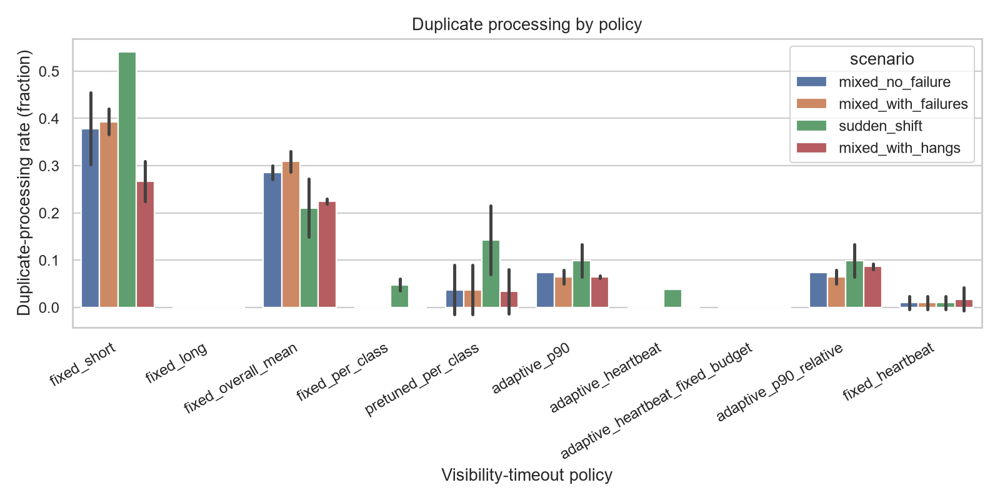
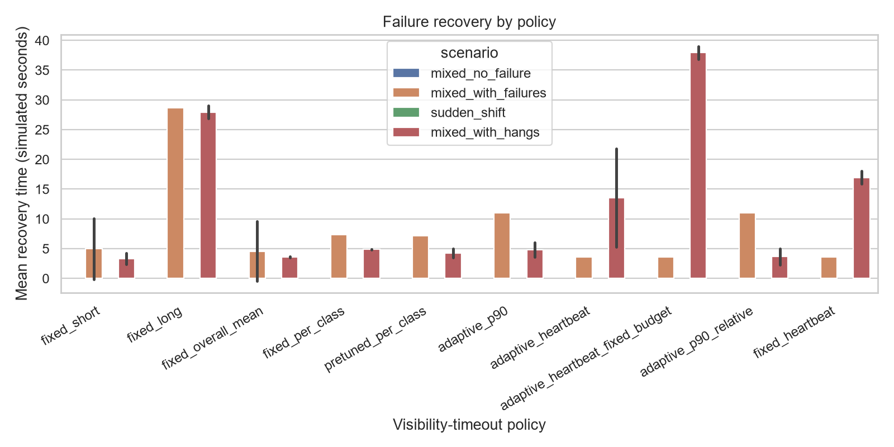
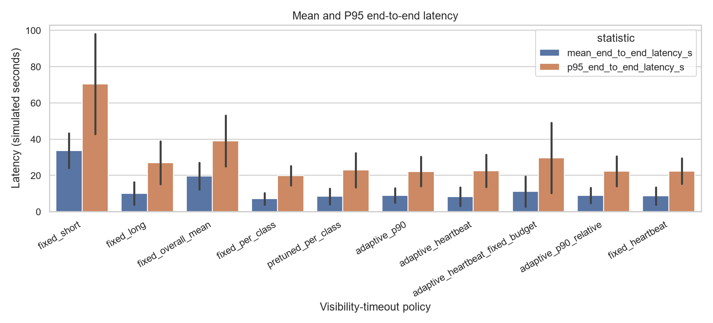
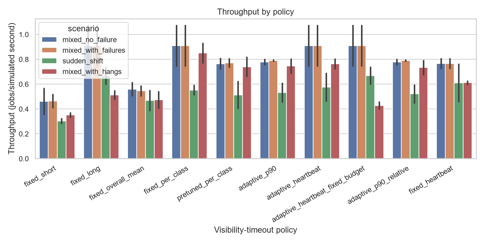
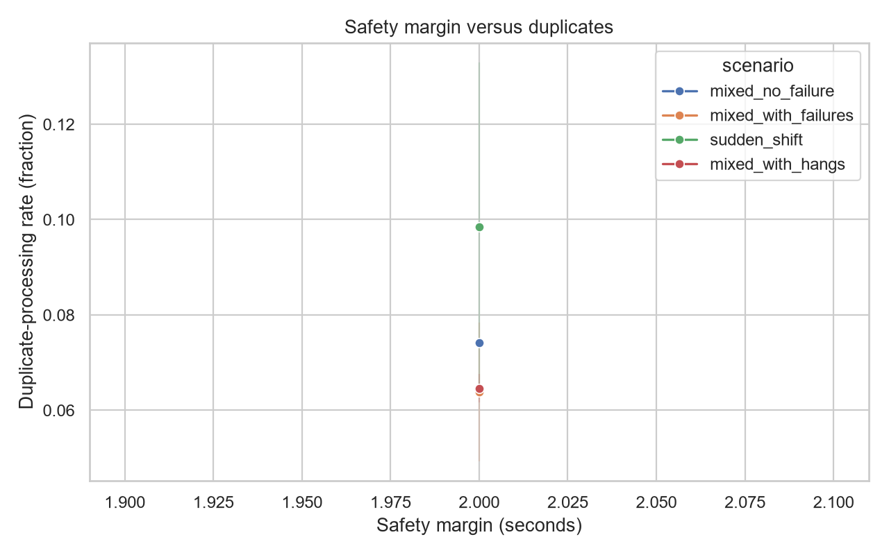
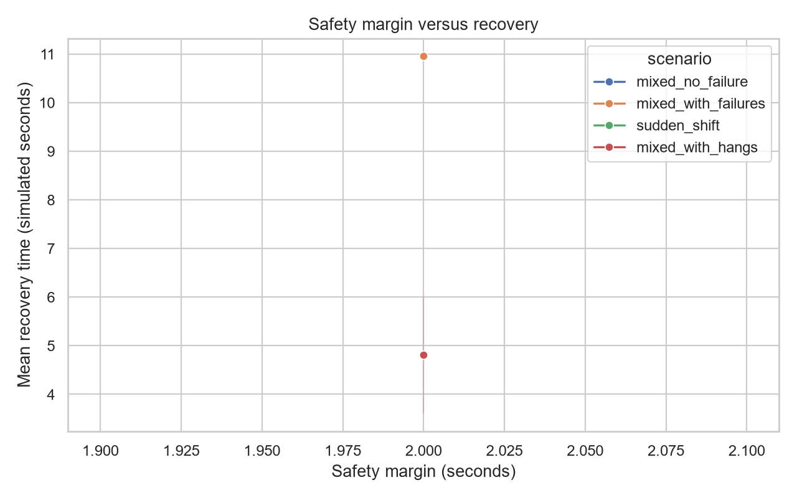
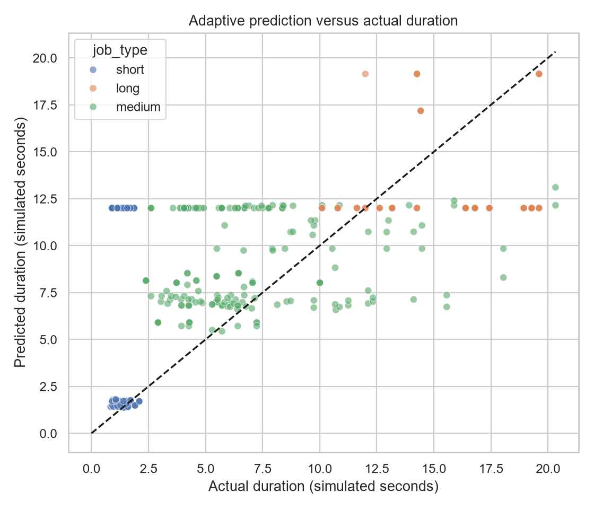
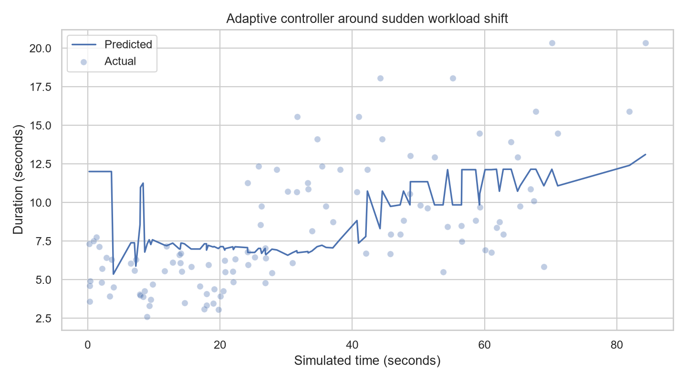
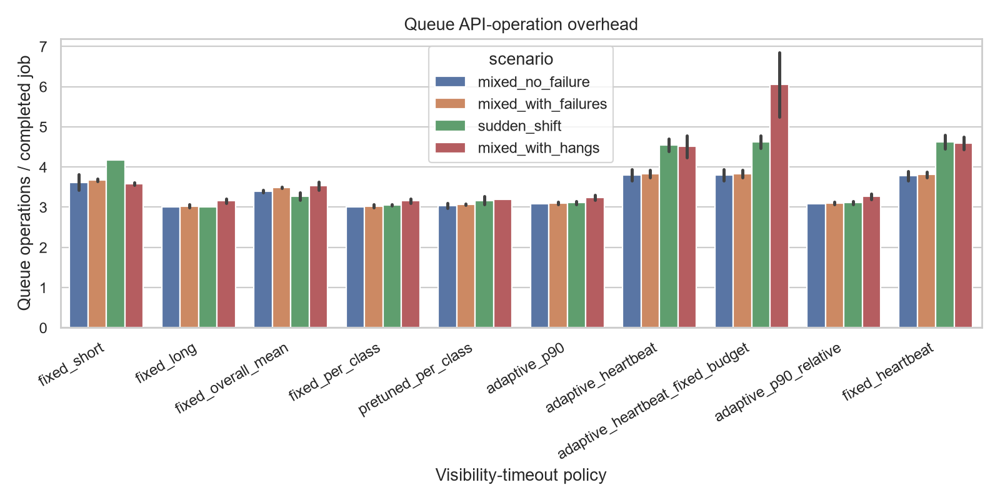
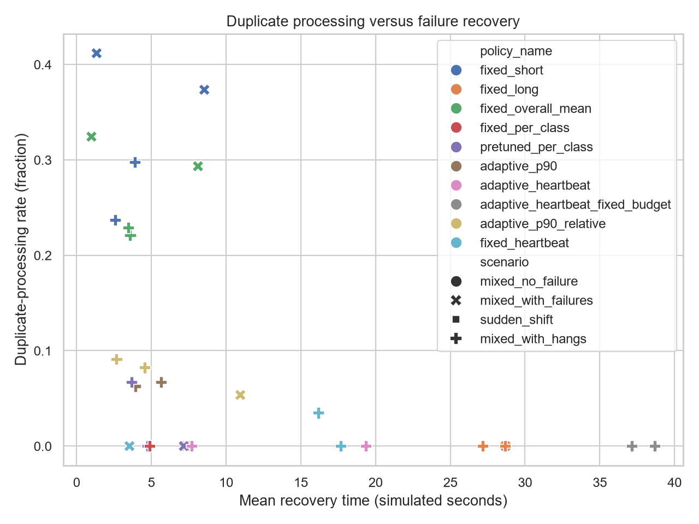
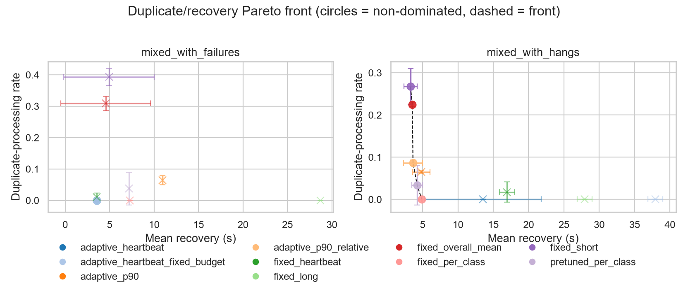
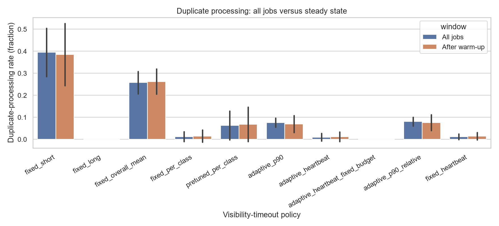